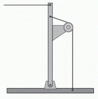
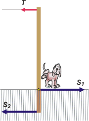
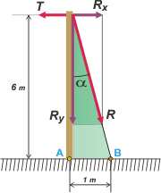

NO ME SALEN
PROBLEMAS RESUELTOS DE FÍSICA DEL CBC |
|

|
 |
2.26- Un poste en equilibrio sostiene un cable
horizontal que está a seis metros de altura y hace
una fuerza de 120 kilogramos fuerza (kgf); la
rienda vertical está a un metro de distancia del
poste. |
 |
La parte inclinada de la rienda forma un ángulo
de 37° con la horizontal, el poste está articulado
en su base; el rozamiento se puede despreciar,
y entre los datos que acabamos de dar hay
uno que sobra.
¿Qué fuerza hace la rienda vertical, en kilogramos
fuerza?
a)10 b)20 c)30
d)40 e)600 f)720 |
|
|  |
Problema sencillo si los hay, sólo que un poco irreal, aunque justificadamente. Lo irreal consiste en que los postes de Multicanal, Cablevisión y cualquier otra plantadora de postes que se te ocurra, no se apoyan sobre un punto articulado sino que se entierran 1 metro, más o menos y si te tocó en tu vereda bancatelá.
Si sólo hicieran eso la tensión del cable terminaría venciendo las fuerzas del encaje en la tierra, ya que desde allá arriba, a 6 metros, el momento es tan grande que desequilibra el poste y te termina rompiendo la vereda y convirtiéndose en un peligro para vecinos humanos y caninos. Para poder elquilibrar el poste Las fuerzas laterales que debería hacer el suelo, S1 y S2, tendrían que ser demasiado altas. No se bancan. |
|
|
|
| Por eso , los ingenieros buscaron formas alternativas de equilibrar el poste que no sea con grandes esfuerzos de vereda. Una de ellas es la de nuestro problema. Si efectivamente lo consiguen no es tan grave la irrealidad del planteo, al menos describe el propósito de los ingenieros. |
|
 |
La rienda provoca un torque de sentido contrario al que ejerce la tensión del cable. El resto de las fuerzas que actúan sobre el poste lo hacen el el punto de apoyo (virtual), A. Si elijo ese punto como centro de momentos todas ellas tendrán momento nulo, y sólo quedan los momentos del cable y de la rienda. Para que el poste se mantenga en equilibrio la suma de esos dos momentos debe ser igual a cero:
ΣM = 0 → MT + MR = 0
120 kgf . 6 m — R . 1 m = 0 |
|
|
|
|
Discusión: el modo en que se sostiene la rienda no afecta la estática del problema sino la estática interna del poste. La ménsula sobresaliente (en este caso de 1 m) es más rígida si se sostiene como lo indica la figura original del problema, o sea con otra rienda (o la misma) atada desde el tope y bajando en forma oblicua hasta el extremo de la mensula. Eso ahorra material. Pero para nuestro problema es superfluo, ya que consideramos al poste, ménsula y rienda oblicua como parte de un cuerpo rígido.
Respecto al resultado está claro que cuanto mayor sea la distancia entre el punto A y B, menor va a ser la fuerza que debe soportar la rienda. En realidad lo que preocupa no es la fuerza de la rienda (pueden soportar valores mucho mayores) sino su anclaje en el punto B (otra vez la bendita vereda). Para que esa fuerza sea menor es que debe separarse lo más posible de A. Pero justamente la distancia AB suele ser el problema limitante. En la ciudad, lo que no sobra, es espacio. |
|
|  |
Qué pasaría si ancláramos la rienda en el punto B atada directamente desde arriba y sin pasar por una ménsula. Para entender eso tendrás que describir el equilibrio logrado con esta otra configuración. Para eso habrá que descomponer la fuerza de la rienda en dos direcciones, una horizontal (que deberá valer lo mismo que la tensión y otra vertical cuyo valor surge de la descomposición trigonométrica del ángulo α del poste con la vertical, que es el mismo que forma el triángulo poste-piso-rienda).
Rx = R sen α = T
Ry = R cos α |
|
|
DESAFIO: Hacé vos el cálculo y decime cuál es la ventaja de colocar la ménsula.
|
 |
| |
| Algunos derechos reservados.
Se permite su reproducción citando la fuente. Última actualización ene-07. Buenos Aires, Argentina. |
|
|
|